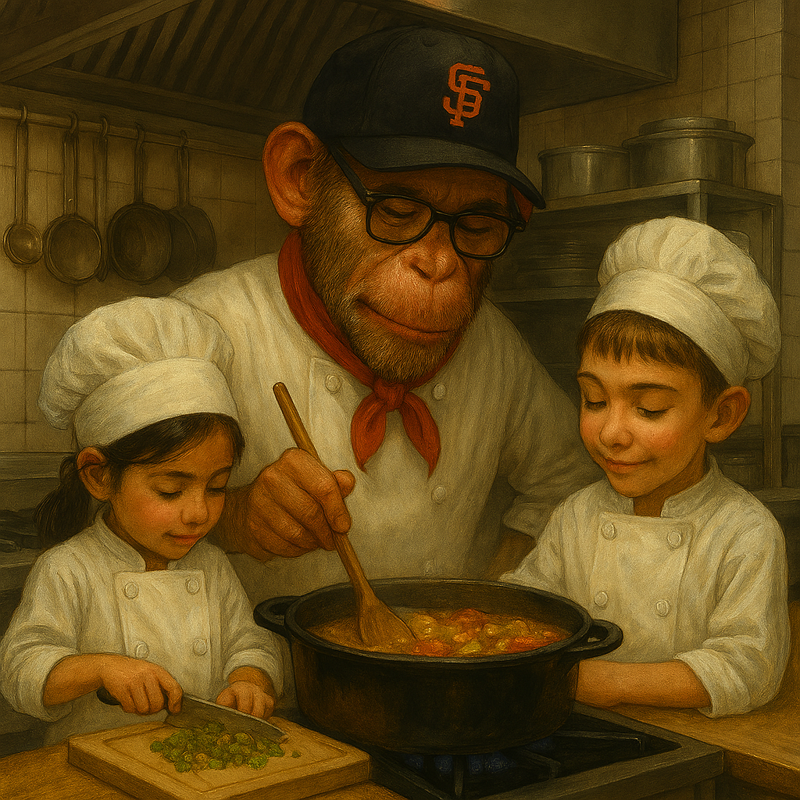

Cajun Vegetable Stew

Ingredients
- 2 tbs butter
- 2 tbs flour
- ½ lb frozen corn
- 1 lb frozen petite peas
- 1 small onion, finely diced
- 1 shallot, finely diced
- 1 stalk celery, finely diced
- 1 small bell pepper, finely diced
- 2 medium carrots, peeled and diced
- 2 small Yukon Gold potatoes, peeled and diced
- 1 jalapeno pepper
- 4 C vegetable stock
- ¾ tsp salt
- ½ tsp pepper
- ½ tsp Cajun seasoning
- ¼ lb ham steak, cubed
Directions
- Brown Ham: In a large saucepan, brown ham in 1 tbs butter with Cajun seasoning. Remove and set aside.
- Cook Veggies: Melt another 1 tbs butter over moderately high heat. Add onion, celery, bell pepper, jalapeño, and shallot; cook until softened.
- Thicken Base: Stir in flour until well combined.
- Simmer: Add stock, carrots, potatoes, and seasonings. Bring to a boil, then cover and reduce heat to moderate. Cook about 8 minutes, until carrots and potatoes are just tender.
- Finish: Add peas and corn, cover, and simmer 5 minutes more until tender.
- Serve: Serve hot.
The Gumbo Page
Michael Fritsche
mbf@fritsche.org